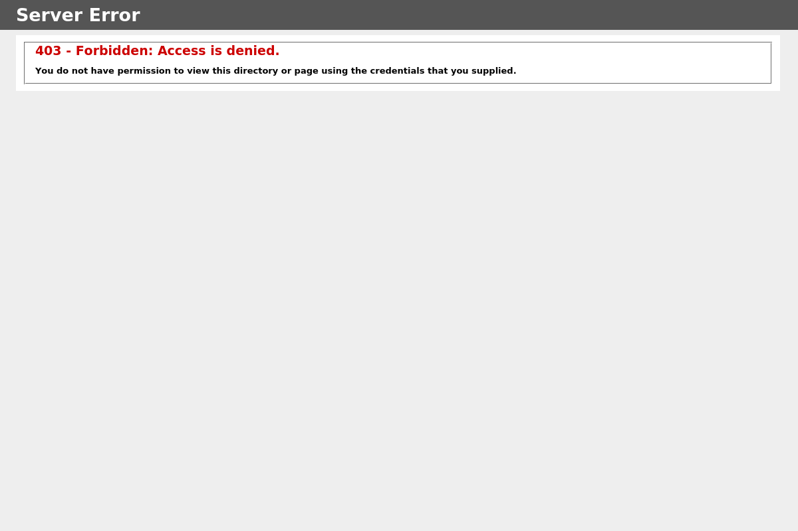
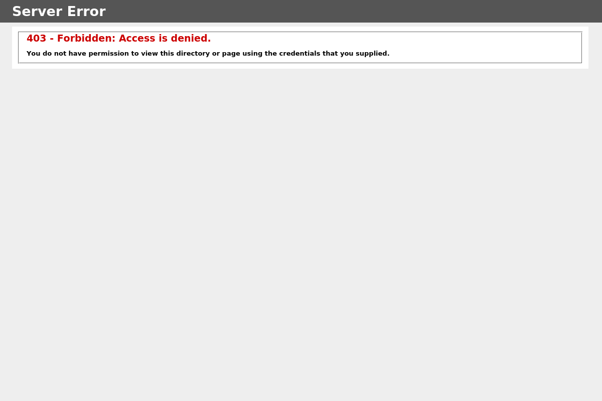

Screeshot
Port 80 Port 443
 

Dig Info
; <<>> DiG 9.11.4-2-Debian <<>> i.ex.seek.com.au
;; global options: +cmd
;; Got answer:
;; ->>HEADER<<- opcode: QUERY, status: NOERROR, id: 36016
;; flags: qr rd ra; QUERY: 1, ANSWER: 4, AUTHORITY: 0, ADDITIONAL: 1
;; OPT PSEUDOSECTION:
; EDNS: version: 0, flags:; MBZ: 0x0005, udp: 512
;; QUESTION SECTION:
;i.ex.seek.com.au. IN A
;; ANSWER SECTION:
i.ex.seek.com.au. 5 IN CNAME i.ex.seek.com.au.akamaized.net.
i.ex.seek.com.au.akamaized.net. 5 IN CNAME a659.g1.akamai.net.
a659.g1.akamai.net. 5 IN A 104.116.243.176
a659.g1.akamai.net. 5 IN A 104.116.243.154
;; Query time: 522 msec
;; SERVER: 192.168.58.2#53(192.168.58.2)
;; WHEN: Tue May 21 11:39:13 EDT 2019
;; MSG SIZE rcvd: 150
Host Info
i.ex.seek.com.au is an alias for i.ex.seek.com.au.akamaized.net.
i.ex.seek.com.au.akamaized.net is an alias for a659.g1.akamai.net.
a659.g1.akamai.net has address 104.116.243.154
a659.g1.akamai.net has address 104.116.243.176
Response Header
HTTP/1.1 403 Forbidden
Content-Type: text/html
Server: Microsoft-IIS/8.0
X-Powered-By: ASP.NET
Content-Length: 1233
Date: Tue, 21 May 2019 15:39:17 GMT
Connection: keep-alive
Nmap Results
nmap -sV -T3 -Pn -p3868,3366,8443,8080,9443,9091,3000,8000,5900,8081,6000,10000,8181,3306,5000,4000,8888,5432,15672,9999,161,4044,7077,4040,9000,8089,443,7447,7080,8880,8983,5673,7443
Starting Nmap 7.70 ( https://nmap.org ) at 2019-05-21 11:39 EDT
Nmap scan report for i.ex.seek.com.au (23.48.201.88)
Host is up (0.097s latency).
Other addresses for i.ex.seek.com.au (not scanned): 23.48.201.98
rDNS record for 23.48.201.88: a23-48-201-88.deploy.static.akamaitechnologies.com
Not shown: 32 filtered ports
PORT STATE SERVICE VERSION
443/tcp open ssl/http AkamaiGHost (Akamai's HTTP Acceleration/Mirror service)
Service detection performed. Please report any incorrect results at https://nmap.org/submit/ .
Nmap done: 1 IP address (1 host up) scanned in 19.23 seconds